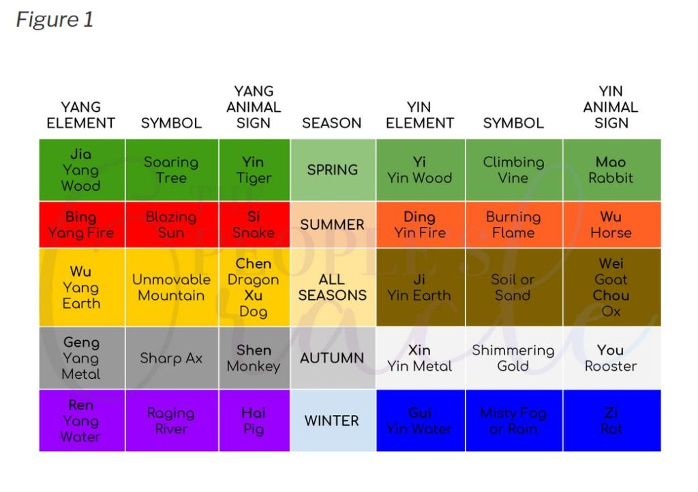
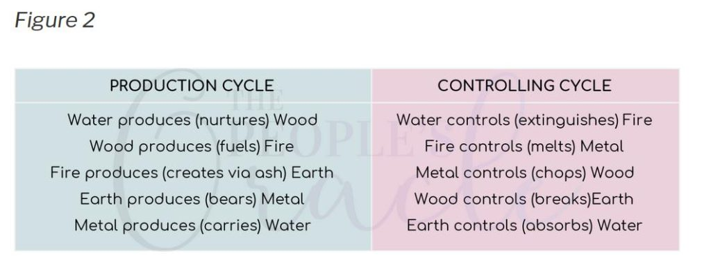
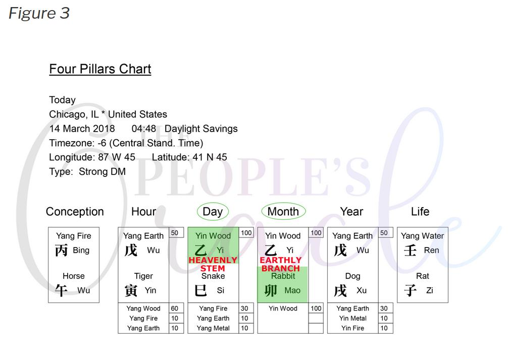
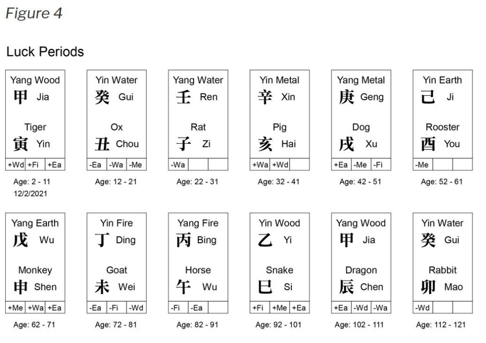
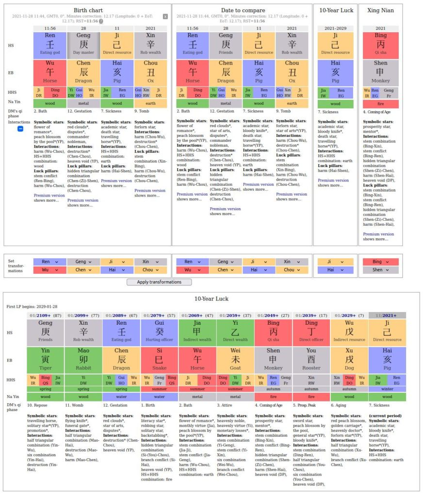
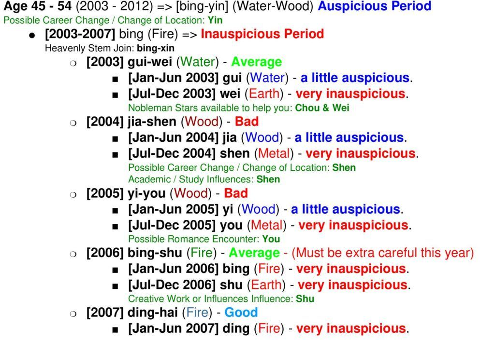
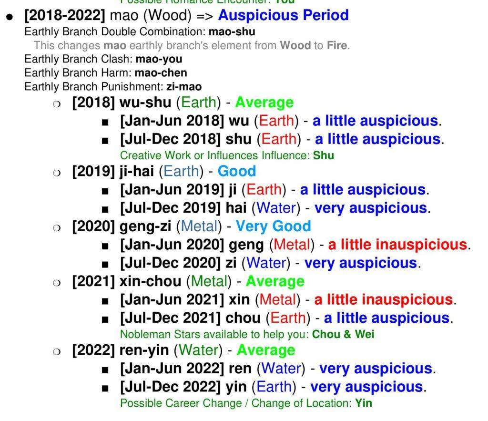

This article discusses fate forecasting. It is a technique of measurement to gauge the degree of luck that exists in your present and future.
All MM readers know that we as consciousness are free to move around by choice and action in our reality, but that the options offered to us are limited due to fate. This fate is known as the pre-birth world-line template.
Additionally, another component comes into play. This is the entry point (time and place) when the physical body is birthed. This point in time establishes the fate that the consciousness experiences during a life-time. It’s a measure of how easy or how difficult it is for the consciousness to experience events on their template.
When you look at the MWI world-line template map and you see all those hills and valleys, we tend to believe that they are equally difficult for us to climb or scramble down. But that is not actually the case. Consider our consciousness has another set of “baggage” that it must carry up and down those hills. This extra “baggage” is known as fate.
It is fixed, but can be measured.
Depending on the person, the “baggage” of fate (or you might call it a “fate setting”) might be light and positive, or heavy and oppressive. This will have two effects.
Firstly, it will affect how the consciousness WANTS to navigate on the MWI; Does it want to climb those mountains or go towards those hills. And…
Secondly, it will affect the apparent ease of climbing the terrain on the MWI in front of them.
This method is known as Chinese astrology and horoscopes in terms of quantum physics related to the MWI (reality universe) where our thoughts control our world-line movement. Let it be clear that while there are many unfamiliar terms and associations with astrology, the system, mapped out by the Chinese over many centuries, is an empirical solution and explanation for the rise and fall of “luck” that consciousness experiences during a lifetime.
This is part 1.
I have described an element of the Bazi in my life by studying the Ben Ming Nian when I turned sixty years old. Here I stated…
Contemporaneously, in the Bazi it is believed that a person is surrounded by a non-physical reality. Within this non-physical are cyclic events and attributes that ebb and flow depending on a host of causes and effects. This non-physical reality differs from person to person. However, it consists of things that ebb and flow according to synchronized events that are triggered upon birth. The Chinese have given these various components and their behaviors all sorts of names. They have created a series of "animal characteristics" such as dog, pig, and snake to describe a set of initial non-physical conditions.
They have also created a series of names to describe how the non-physical components behave as a group. They go by such names as a "strong earth", or a "weak wood".
It's easy for the ignorant to make fun of this entire system. To them, it sounds a lot like a more detailed version of Western astrology.
But it is not.
It’s not bullshit
It’s an empirically obtained solution for rise and fall of fate and luck during one’s lifetime.
empirical
based on, concerned with, or verifiable by observation or experience rather than theory or pure logic.
For over 5000 years, the Chinese have observed the rise and falls of fortunes.
They noticed that people with similar birth dates had similar luck, and this effect was studied and built upon. The entire effort; this trend for luck (good or bad) is well mapped out, and it is an empirically derived map that resembles the pre-birth world-line template.
It is called Bazi.
Basics
Bazi is known by different names; the most commonly used names in China are…
-
-
- Eight Characters (八字) , BaZi.
- Four-Pillars (四柱),
- Zi Ping (子平).
-
It is a technique that is based on one’s precise birth date and time to the exact minute. At the moment of birth, the physical body enters the MWI on a specific world-line. This world-line moment in time sets the “fate rules” for the person so birthed.
In practice, the birth date/time is first translated into a Chinese calendar representation. This representation is described as 4 “pillars”. Each pillar represents YEAR, MONTH, DAY and HOUR. And each pillar contains 2 Chinese characters.
Four pillars, each having two characters means a total of eight characters, hence the term “the naming of Eight Characters.”
Bazi had long been used and practiced, but in Sung Dynasty, Xu Zi Ping, set the standard in using Bazi as the fortune of fate forecasting tool.
Bazi is a forecasting tool that measures one’s fate on the pre-birth world-line template. This aspect of fate is not changed when you slide off one template to another. Your fate is fixed with your physical body. It is not associated with the world-lines that you traverse.
The methodology
There are ‘two’ main fortune forecasting methods: (a) 神煞 and (b) 十神生剋制化.
[a] 神煞 (shén shà) “God is scant”
This is used by many practitioners. Simply because it much easier to use than [b] below.
[b] 十神生剋制化 (shí shén shēng kè zhì huà) “Ten gods are born and systematized”
Xu Zi Ping, of the Sung Dynasty, based his foretasting on this methodology. It is both much richer in its theoretical base as well as its application than [a].
Destiny considerations
One should note that bazi only uses the birth time for fate forecasting. It does not include where the person is born and what are the targeted person’s relationships. Both these aspects contributes a significant influence on one’s destiny.
So bazi can only provide an indicator of a possible prediction. This is critical as many people think bazi or any fortune telling tool can be used to predict with 100% accuracy, I will leave this to you to have a thought about it.
The other analogy of Bazi is DNA: with the advance of genealogy, it is now possible to predict one’s health condition and possibilities of getting certain diseases. Genealogy doesn’t say one WILL certainly get some diseases but only suggests that one may be more susceptible. Bazi is similar whereby it can be used as a guide to what may happen to one’s fate.
Good Luck and Bad Luck
The fate forecasting methodology relies on trending attributes for measurement. You have “auspicious” trends and “inauspicious” trends. Further these are further divided into strong and weak trends.
Good Luck
-
-
- Strong likelihood of auspicious opportunities / events.
- A weak trend towards auspicious opportunities / events.
-
Bad Luck
-
-
- Strong likelihood of inauspicious opportunities / events.
- A weak trend towards inauspicious opportunities / events.
-
A Bazi (Chinese Astrology) Primer
Chinese cosmology is a cohesive philosophy that undergirds every aspect of Chinese culture and society.
This primer is by no means meant to be a comprehensive treatment of Chinese cosmology. It is, however, meant to serve as an introductory guide to Bazi which is Chinese Astrology.
It is presented here on MM as a forecasting tool to measure fate influences as your consciousness travels the MWI and world-line movement.
MING MEANS FATE, OR LUCK
命运 (mìng yùn)
fate, destiny, fortunes, fates
Chinese cosmology has a holistic conception of “ming”, or fate/destiny. There are 3 kinds of fate of luck: heaven luck, earth luck, and man luck. These are hierarchical and define both the possibilities and impossibilities in a person’s life.
All 3 notions of fate, or luck, are beholden to time:
- Heaven luck is astrology, how celestial phenomena occurring at specified times correlate to affairs on earth and the lives of men;
- Earth luck is feng shui, the art of scheduling and positioning. It is the orientation of one’s self and life in relationship to the flow of qi (life force or energy);
- Man luck is how one understands, respects, and works with or against their heaven and earth luck.
WU XING: FIVE PHASES OF QI
Essential to each of these studies of fate is “wu xing” which is the five elements (stages, phases, etc). The five elements are:
-
-
- Wood
- Fire
- Earth
- Metal
- Water
-
Each of the five elements takes to forms, a yin form and a yang form giving us 10 primary presentations of qi (Life force energy).
Each of these yin/yang forms of qi governs a season.
Each season is comprised of 3 animal signs which are earthly manifestations of the qi/element that governs each season. Earth governs the periods between each of the seasons. See figure 1 for an example. Note that it changes yearly from one person to the next.

Each element interacts with every other element in several defined relationships.
But the most important interactions between elements are the production cycle and the controlling cycle.
Be careful not to assume that relationships is better than the other. Context is everything.
When we discover the flow of your chart we will come to understand which relationships are most important to support that flow.

ANATOMY OF A BAZI CHART
Bazi means eight characters.
The eight characters in your Chinese astrology chart are divided into two groups.
The [1] Heavenly Stems and [2] the Earthly Branches.
The Heavenly Stems are the pure qi, the five elements in their yin or yang forms. The Earthly Branches are the 12 animals (see Figure 1).
There are four pillars in your Bazi chart. The year pillar, month pillar, day pillar, and hour pillar.
- Year pillar is grandparents and extended family members, it is your family background and upbringing.
- Month pillar represents the parents or siblings, employment.
- Day pillar is the self, spouse, home.
- Hour pillar is children, aspiration, career.
Each pillar has one heavenly stem at the top, and one earthly branch on the bottom. Each part of the chart is identified in terms of its pillar and whether it’s a stem or a branch. See figure 3 for another example for a specific person on a specific year.

The two most important parts of a Bazi chart are the day stem and the month branch. The day stem is called the daymaster, and the month branch is the season of birth.
Once the daymaster is identified each of the other elements can be identified as well.
- The daymaster (and its yin or yang counterpart) is the self (friends/enemies, peers, audience). It produces output.
- The element that the daymaster produces is output (ideas, work ethic, talents, children in the chart of women). It produces wealth.
- The element that output produces is wealth (assets, father, spouse or partner in the chart of men) it produces influence.
- The element that wealth produces is officer (authority, superiors, spouse or partner in the chart of women, children in the chart of men). It produces resource.
- The element that the officer produces is resource (mother, family support and upbringing, education, helpful people). It produces the self.
IDENTIFYING YOUR FLOW
The flow of a Bazi chart originates with the daymaster and the season.
The daymaster can be rooted or not rooted in the season. That means the animal in the earthly branch of the month pillar can be the same as or produce the element in the heavenly stem of the day pillar.
For example, Yi (Yin Wood) daymaster born in Spring (Wood season) or Winter (Water season) is rooted because the element of the season in the month branch matches the element of the day stem. Yi is rooted in Winter because the Water of Winter produces Wood. Yi (Yin Wood). Yi (Yin Wood) born in any other season is not rooted.
Whether or not the daymaster is rooted in the month branch determines the flow of the chart. The flow defines which elements are favorable and which elements are unfavorable to a chart. This is a complicated task that requires an understanding of how the stems and branches interact with each other. That is beyond the scope of this primer.
LUCK PILLARS
The Bazi chart and its flow determine the heaven luck you were born with. The annual and 10 (personal) year luck pillars determines when that flow is supported, disrupted or blocked.
Every 10 years, your personal luck pillar changes. Then you enter a new time period with a different focus. See figure 4 for another example.

Each year the annual luck pillar changes. It interacts with both your Bazi chart and your personal luck pillar to support, disrupt, or block the flow that your personal luck pillar adjusts every 10 years.
It is this part we focus on in the Bazi
Conducting the primary forecasting charts
Step 1 – Casting the chart
When casting your Bazi chart, you must convert your birth time to solar time. You can use this calculator to convert it.
Step 2 – Plotting the chart
Here is a calculator you can use to plot your Bazi chart for you. Here’s a sample of what it might look like…

It is very easy to make a mistake in this process. So I strongly recommend that you pay the fee and use an expert. The expert will give you direct and usable intel. Instead of just guidelines that you need to interpret. (And unless you are an expert, you could misinterpret the readings.)
Conclusions
This is just part 1. Don’t get too caught up in the terms and try to make heads or tails out of it. The over all beauty and symmetry of the system becomes evident once you study it.
In future article we will go step by step to tear into the individual components, and then things will become clearer. Of most importance is the idea of “stars” or rotational periodic influences that orbit the consciousness.
I do not recommend that you try to figure out your destiny on your own. Instead, I strongly recommend you locate a practitioner on the internet and they will generate a day to day forecast for you to go by. It has been my personal experience that it is uncanny how accurate it can be.
Here is the group that performed my fate forecast for me back in 2003. I was in the United States at the time, and they are a group in Singapore. No problem what so ever…
My personal experience
Here’s overview excerpts from the MM reading that I obtained back in 2003 from geomancy.net.
I found it interesting, but was not paying attention. I had no idea what “bad” + “Very inauspicious” would mean.
This is the period of time where I was “retired”. My life started to fall apart in August 2005, with arrest and incarceration later on in that year. My sentencing to the ADC was in 2006 where I began my five year prison sentence.

Here is the current period of time.
I can confirm that the first half of 2021 was a bit of a strain for me personally, but that the second half was much better. And things are looking brighter this up coming 2022.

The day to day summaries were very helpful. But again, they just show potentials and when you are getting a massive mountain of shit coming your way, the only thing you can do is hunker down and endure the storm.